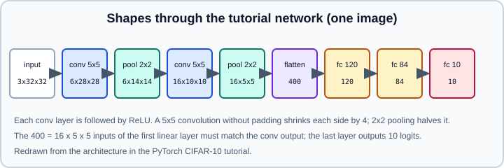

Worked Example: CNN Image Classifier
|
This content was generated with the assistance of AI and should be verified against the official documentation before being relied on in production. |
This worked example builds an image classifier end to end in PyTorch: load a dataset, define a convolutional neural network (CNN), train it, measure accuracy, and save and reload the weights. It follows the structure of two official tutorials, the "Learn the Basics" quickstart (FashionMNIST and a fully connected network) and "Training a Classifier" (CIFAR-10 and a small CNN), and updates them to the current APIs. The theory of convolution, pooling and receptive fields is in Convolutional Neural Networks; the tools used here are explained in Linear, Convolution & Pooling Layers, Datasets & DataLoader, The Training Loop & Evaluation and torchvision.
Examples target Python 3.13 and PyTorch 2.15 with torchvision. The official CIFAR-10 tutorial is "Training a Classifier" (https://docs.pytorch.org/tutorials/beginner/blitz/cifar10_tutorial.html). The code was run on Python 3.13 with PyTorch 2.15 and torchvision 0.29.2 on 2026-10-31, with synthetic stand-ins (torchvision.datasets.FakeData) in place of the CIFAR-10 and Fashion-MNIST downloads and one epoch instead of fifteen; the accuracy figures quoted below therefore come from the official tutorials, not from that run.
What the official tutorials do
The quickstart tutorial (https://docs.pytorch.org/tutorials/beginner/basics/quickstart_tutorial.html) uses FashionMNIST with ToImage and ToDtype v2 transforms, a batch size of 64 and a NeuralNetwork module of three nn.Linear layers (784, 512, 512, 10) with ReLU. It selects the device with torch.accelerator.current_accelerator().type if torch.accelerator.is_available() else "cpu", trains with nn.CrossEntropyLoss and SGD (learning rate 1e-3) for 5 epochs, saves model.state_dict() to model.pth and loads it with torch.load("model.pth", weights_only=True). Its sample run rose from 47.2% to 64.2% test accuracy, which shows how little a plain MLP and a low learning rate achieve in five epochs.
The CIFAR-10 tutorial (the "blitz" Training a Classifier) uses the 60,000 colour 32 by 32 images of CIFAR-10 in 10 classes. It normalizes with v2.Normalize0.5, 0.5, 0.5), (0.5, 0.5, 0.5, trains the network below with SGD (learning rate 0.001, momentum 0.9, batch size 4) for 2 epochs, saves ./cifar_net.pt, and reports 55% accuracy on the 10,000 test images, with the cat, bird and dog classes the hardest. The network:
import torch
import torch.nn as nn
import torch.nn.functional as F
class Net(nn.Module):
def __init__(self):
super().__init__()
self.conv1 = nn.Conv2d(3, 6, 5)
self.pool = nn.MaxPool2d(2, 2)
self.conv2 = nn.Conv2d(6, 16, 5)
self.fc1 = nn.Linear(16 * 5 * 5, 120)
self.fc2 = nn.Linear(120, 84)
self.fc3 = nn.Linear(84, 10)
def forward(self, x):
x = self.pool(F.relu(self.conv1(x)))
x = self.pool(F.relu(self.conv2(x)))
x = torch.flatten(x, 1)
x = F.relu(self.fc1(x))
x = F.relu(self.fc2(x))
return self.fc3(x)
Reading the shapes explains the constants: a 5 by 5 convolution without padding turns a 32 by 32 map into 28 by 28 (output size \(= n - k + 1\)), pooling halves it to 14, the second convolution gives 10, pooling gives 5, and flattening 16 channels of 5 by 5 gives the 400 inputs of fc1. Changing the input resolution means recomputing that number, or using nn.LazyLinear or nn.AdaptiveAvgPool2d, which remove the manual arithmetic.
A complete, modernized script
The script below keeps the tutorial’s overall design and applies the practices of the rest of this section: a v2 transform pipeline with a training-only augmentation, a validation split from the training set, a larger batch with workers, BatchNorm, device handling with torch.accelerator, explicit train and eval modes, torch.inference_mode for evaluation, and a state_dict checkpoint. It is a starting point, not a tuned benchmark.
"""cifar_cnn.py: train a small CNN on CIFAR-10 with PyTorch."""
import torch
import torch.nn as nn
import torch.nn.functional as F
from torch.utils.data import DataLoader, Subset
from torchvision import datasets
from torchvision.transforms import v2
CLASSES = ("plane", "car", "bird", "cat", "deer", "dog", "frog", "horse", "ship", "truck")
MEAN, STD = (0.4914, 0.4822, 0.4465), (0.2470, 0.2435, 0.2616) # CIFAR-10 channel statistics
def pick_device() -> torch.device:
if torch.accelerator.is_available():
return torch.accelerator.current_accelerator()
return torch.device("cpu")
def make_loaders(batch_size=128, num_workers=2):
train_tf = v2.Compose([
v2.ToImage(),
v2.RandomCrop(32, padding=4),
v2.RandomHorizontalFlip(),
v2.ToDtype(torch.float32, scale=True),
v2.Normalize(MEAN, STD),
])
eval_tf = v2.Compose([
v2.ToImage(),
v2.ToDtype(torch.float32, scale=True),
v2.Normalize(MEAN, STD),
])
full_train = datasets.CIFAR10("data", train=True, download=True, transform=train_tf)
full_val = datasets.CIFAR10("data", train=True, download=True, transform=eval_tf)
test = datasets.CIFAR10("data", train=False, download=True, transform=eval_tf)
g = torch.Generator().manual_seed(0)
perm = torch.randperm(len(full_train), generator=g).tolist()
train = Subset(full_train, perm[:45_000])
val = Subset(full_val, perm[45_000:])
kw = dict(batch_size=batch_size, num_workers=num_workers, pin_memory=True, persistent_workers=num_workers > 0)
return (DataLoader(train, shuffle=True, **kw),
DataLoader(val, **kw),
DataLoader(test, **kw))
def conv_block(c_in, c_out):
return nn.Sequential(
nn.Conv2d(c_in, c_out, 3, padding=1, bias=False),
nn.BatchNorm2d(c_out),
nn.ReLU(inplace=True),
nn.MaxPool2d(2),
)
class SmallCNN(nn.Module):
def __init__(self, num_classes=10):
super().__init__()
self.features = nn.Sequential(conv_block(3, 32), conv_block(32, 64), conv_block(64, 128)) # 32 -> 16 -> 8 -> 4
self.head = nn.Sequential(nn.Flatten(), nn.Dropout(0.3), nn.Linear(128 * 4 * 4, num_classes))
def forward(self, x):
return self.head(self.features(x))
def train_one_epoch(model, loader, loss_fn, optimizer, device, scheduler):
model.train()
total, correct, running = 0, 0, 0.0
for x, y in loader:
x, y = x.to(device, non_blocking=True), y.to(device, non_blocking=True)
logits = model(x)
loss = loss_fn(logits, y)
optimizer.zero_grad(set_to_none=True)
loss.backward()
optimizer.step()
scheduler.step() # OneCycleLR advances once per batch
running += loss.item() * y.size(0)
correct += (logits.argmax(1) == y).sum().item()
total += y.size(0)
return running / total, correct / total
@torch.inference_mode()
def evaluate(model, loader, loss_fn, device):
model.eval()
total, correct, running = 0, 0, 0.0
for x, y in loader:
x, y = x.to(device, non_blocking=True), y.to(device, non_blocking=True)
logits = model(x)
running += loss_fn(logits, y).item() * y.size(0)
correct += (logits.argmax(1) == y).sum().item()
total += y.size(0)
return running / total, correct / total
def main(epochs=15, lr=0.05):
torch.manual_seed(0)
device = pick_device()
print("device:", device)
train_loader, val_loader, test_loader = make_loaders()
model = SmallCNN().to(device)
loss_fn = nn.CrossEntropyLoss()
optimizer = torch.optim.SGD(model.parameters(), lr=lr, momentum=0.9, weight_decay=5e-4, nesterov=True)
scheduler = torch.optim.lr_scheduler.OneCycleLR(
optimizer, max_lr=lr, epochs=epochs, steps_per_epoch=len(train_loader))
best = 0.0
for epoch in range(1, epochs + 1):
tr_loss, tr_acc = train_one_epoch(model, train_loader, loss_fn, optimizer, device, scheduler)
va_loss, va_acc = evaluate(model, val_loader, loss_fn, device)
print(f"epoch {epoch:2d} train {tr_loss:.3f}/{tr_acc:.3f} val {va_loss:.3f}/{va_acc:.3f}")
if va_acc > best:
best = va_acc
torch.save(model.state_dict(), "cifar_cnn.pt")
model.load_state_dict(torch.load("cifar_cnn.pt", weights_only=True))
te_loss, te_acc = evaluate(model, test_loader, loss_fn, device)
print(f"test accuracy of the best checkpoint: {te_acc:.3f}")
if __name__ == "__main__":
main()Source: adapted from https://docs.pytorch.org/tutorials/beginner/blitz/cifar10_tutorial.html and https://docs.pytorch.org/tutorials/beginner/basics/quickstart_tutorial.html
OneCycleLR is a per-batch scheduler, so it is stepped inside the training loop right after optimizer.step(). Schedulers that step per epoch (StepLR, CosineAnnealingLR) go after the epoch loop body instead; see Learning-Rate Schedulers & SWA/EMA.
Why each choice
-
Two dataset objects with different transforms. Random crops and flips belong only to the training pipeline. The validation indices are split once with a seeded generator and applied to a second dataset object that has the evaluation transform; otherwise the validation images would be augmented. The test set is touched once at the end.
-
CIFAR-10 statistics. The tutorial normalizes with 0.5 for every channel, which is simple and good enough; per-channel means and standard deviations (approximately the values above) are the usual refinement.
-
ToImageandToDtype(scale=True)replace the deprecatedToTensor; see torchvision. -
BatchNorm before ReLU,
bias=Falsein the convolution. The batch-norm shift makes the convolution bias redundant. BatchNorm lets you use a much larger learning rate than the tutorial network; see Training Deep Networks. -
Dropout only in the head and weight decay on the optimizer provide regularization.
-
persistent_workers,pin_memoryandnon_blockingreduce the data-loading overhead when training on an accelerator; details in Workers, Pinned Memory & Samplers. The tutorial notes thatnum_workers=2can raise aBrokenPipeErroror multiprocessingRuntimeErroron Windows or macOS and thatnum_workers=0is the workaround; with the spawn start method put the training code underif __name__ == "__main__":, as above. -
torch.inference_modeplusmodel.eval(). Evaluation must disable gradient tracking and switch dropout and batch-norm to inference behaviour; see no_grad, inference_mode & Grad Modes. -
Checkpoint by validation accuracy, then reload it for the single test evaluation.
weights_only=Truerestricts unpickling to tensors and basic types; see Saving & Loading Models. -
Logits go straight into
nn.CrossEntropyLoss. Do not add a softmax before it; applysoftmaxonly when you need probabilities. See Loss Functions.
Looking at the mistakes
Overall accuracy hides which classes fail. The tutorial reports per-class accuracy (the CIFAR-10 run shows cat, bird and dog as the hardest). A confusion matrix is the next step:
import torch
@torch.inference_mode()
def confusion(model, loader, device, num_classes=10):
model.eval()
cm = torch.zeros(num_classes, num_classes, dtype=torch.long)
for x, y in loader:
pred = model(x.to(device)).argmax(1).cpu()
idx = y * num_classes + pred
cm += torch.bincount(idx, minlength=num_classes ** 2).view(num_classes, num_classes)
return cm # rows: true class, columns: predicted class
# per-class accuracy: cm.diag() / cm.sum(1)Model quality and evaluation metrics are discussed in Generalization & Regularization.
Improving the result
In rough order of payoff for a CIFAR-sized problem:
-
Transfer learning. Fine-tune a pre-trained ResNet or ConvNeXt on upscaled CIFAR images, see Transfer Learning & Fine-Tuning.
-
Stronger augmentation:
v2.TrivialAugmentWide,v2.RandomErasing, and CutMix or MixUp in thecollate_fn. -
A deeper residual network instead of the plain stack (the skip connections of ResNet are what make 20 or more layers trainable).
-
Longer training with a good schedule and label smoothing (
nn.CrossEntropyLoss(label_smoothing=0.1)). -
Mixed precision and channels-last memory format for speed; see Mixed Precision with torch.amp.
-
Hyperparameter search and the process in Deep Learning Tuning Playbook.
To reproduce a run exactly, seed everything and read Reproducibility & Determinism. To log curves, see TensorBoard Integration. The same project in the other frameworks is in Choosing a Framework.
Quickstart variant: FashionMNIST
If you only want the shortest path, the quickstart tutorial replaces the dataset class and the model:
import torch
from torch import nn
from torch.utils.data import DataLoader
from torchvision import datasets
from torchvision.transforms import v2
tf = v2.Compose([v2.ToImage(), v2.ToDtype(torch.float32, scale=True)])
train = datasets.FashionMNIST("data", train=True, download=True, transform=tf)
loader = DataLoader(train, batch_size=64, shuffle=True)
model = nn.Sequential(nn.Flatten(), nn.Linear(28 * 28, 512), nn.ReLU(),
nn.Linear(512, 512), nn.ReLU(), nn.Linear(512, 10))
X, y = next(iter(loader))
print(X.shape, model(X).shape) # torch.Size([64, 1, 28, 28]) torch.Size([64, 10])